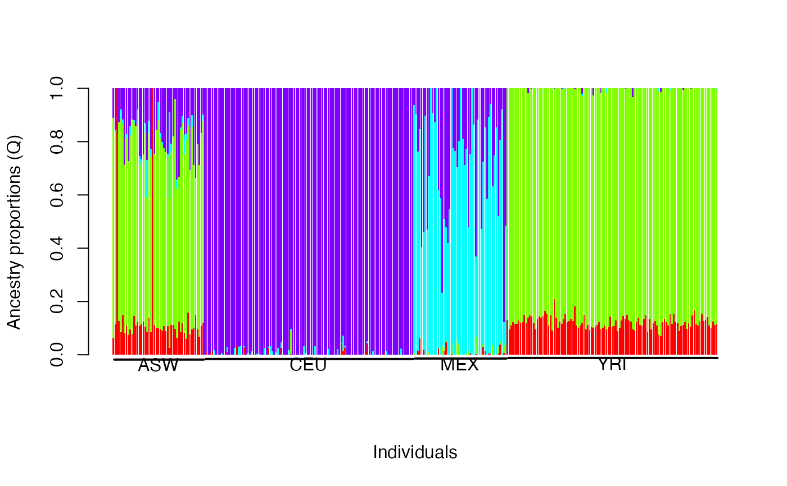
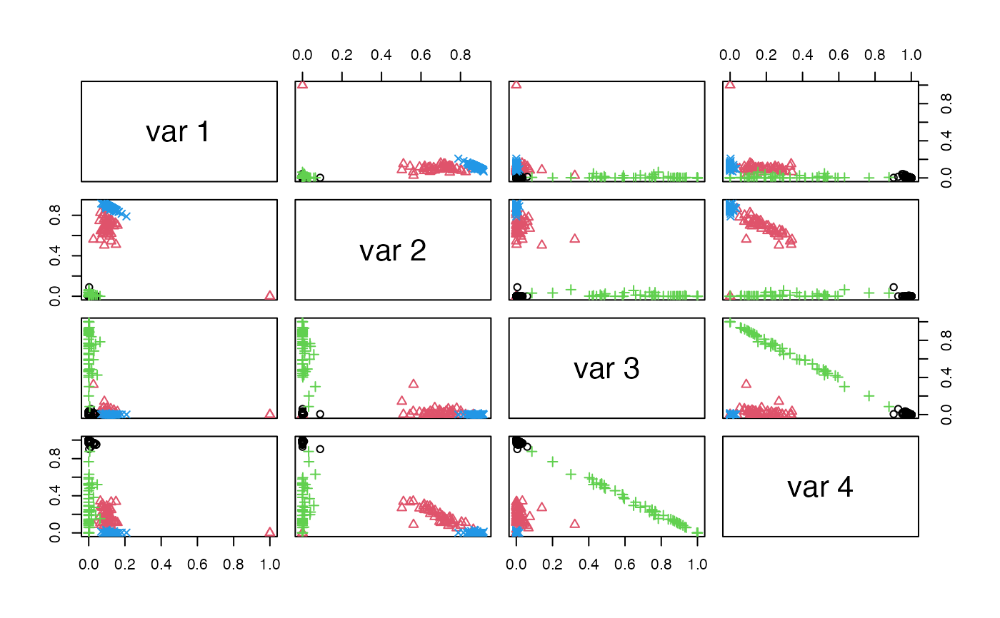

R/hapmap3-data.R
hapmap3.RdData are constructed from the Phase 3 of the HapMap Project. Selected individuals include: (1) MEX: Mexican ancestry sampled in Los Angeles (n=50), (2) ASW: African ancestry sampled in the American Southwest (n=49), (3) CEU: Utah residents with ancestry from Northern and Western Europe (n=112); and (4) YRI: Yoruba in Ibadan, Nigeria (n=113). A subset of the 1,440,616 available markers were chosen according to two criteria: (1) to minimize background linkage disequilibrium, adjacent markers must be no closer than 200 kb apart, and (2) no more than 5% of the genotypes must be missing. Based on the genotypes for these markers for the unrelated individuals from the CEU, YRI, MEX, and ASW samples, a data set of 13,298 markers typed on 324 individuals are selected.
hapmap3A data list hapmap3 with two components
population indicators: 1,2,3,4 for (CEU, ASW, MEX, YRI)
324x13928 matrix of genotypes
Wu X, and Wu B (2024) Radmixture: an R package for fast and robust likelihood-based estimation of admixture model for global ancestry inference. tech rep.
Ko S, Chu BB, Peterson D, Okenwa C, Papp JC, Alexander DH, et al. (2023) Unsupervised discovery of ancestry-informative markers and genetic admixture proportions in biobank-scale datasets. Am J Hum Genet. 2023 Feb 2;110(2):314–25.
D.H. Alexander, J. Novembre, and K. Lange (2009) Fast model-based estimation of ancestry in unrelated individuals. Genome Research, 19:1655-1664.
H. Zhou, D.H. Alexander, and K. Lange (2011) A quasi-Newton method for accelerating the convergence of iterative optimization algorithms. Statistics and Computing, 21:261-273.
data(hapmap3); G = hapmap3$G; Y = hapmap3$Y
jj = which(apply(G, 2, sd)>0); G = G[,jj]
h1 = Radmixture(G,K=4, Kem=5,maxit=1e2,rtol=1e-7,trace=TRUE, nstart=5)
#> Initial LLK = -3863527.893438222
#> 1: LLK= -3849419.877132332, Rel Diff= 0.003651588
#> 2: LLK= -3845498.009793181, Rel Diff= 0.001018820
#> 3: LLK= -3841511.132607949, Rel Diff= 0.001036765
#> 4: LLK= -3840501.751247827, Rel Diff= 0.000262756
#> 5: LLK= -3839979.847594050, Rel Diff= 0.000135895
#> 6: LLK= -3839549.341417414, Rel Diff= 0.000112112
#> 7: LLK= -3839212.493557662, Rel Diff= 0.000087731
#> 8: LLK= -3838948.373580593, Rel Diff= 0.000068795
#> 9: LLK= -3838742.662034543, Rel Diff= 0.000053585
#> 10: LLK= -3838582.874032107, Rel Diff= 0.000041625
#> 11: LLK= -3838440.578871256, Rel Diff= 0.000037070
#> 12: LLK= -3838301.437510054, Rel Diff= 0.000036249
#> 13: LLK= -3838136.061118463, Rel Diff= 0.000043086
#> 14: LLK= -3837944.697355524, Rel Diff= 0.000049859
#> 15: LLK= -3837733.158543008, Rel Diff= 0.000055118
#> 16: LLK= -3837358.048951016, Rel Diff= 0.000097742
#> 17: LLK= -3837059.700570633, Rel Diff= 0.000077748
#> 18: LLK= -3836604.215228490, Rel Diff= 0.000118707
#> 19: LLK= -3836298.318534255, Rel Diff= 0.000079731
#> 20: LLK= -3835978.560306085, Rel Diff= 0.000083351
#> 21: LLK= -3835684.470270958, Rel Diff= 0.000076666
#> 22: LLK= -3835553.849187952, Rel Diff= 0.000034054
#> 23: LLK= -3835447.789818940, Rel Diff= 0.000027652
#> 24: LLK= -3835363.777007272, Rel Diff= 0.000021904
#> 25: LLK= -3835287.696692422, Rel Diff= 0.000019837
#> 26: LLK= -3835218.785533682, Rel Diff= 0.000017968
#> 27: LLK= -3835160.660278333, Rel Diff= 0.000015156
#> 28: LLK= -3835116.660389967, Rel Diff= 0.000011473
#> 29: LLK= -3835085.152737719, Rel Diff= 0.000008216
#> 30: LLK= -3835063.637063363, Rel Diff= 0.000005610
#> 31: LLK= -3835044.844382293, Rel Diff= 0.000004900
#> 32: LLK= -3835037.401311425, Rel Diff= 0.000001941
#> 33: LLK= -3835018.447826786, Rel Diff= 0.000004942
#> 34: LLK= -3834998.214744903, Rel Diff= 0.000005276
#> 35: LLK= -3834981.493025451, Rel Diff= 0.000004360
#> 36: LLK= -3834957.964224558, Rel Diff= 0.000006135
#> 37: LLK= -3834948.384151713, Rel Diff= 0.000002498
#> 38: LLK= -3834915.031195987, Rel Diff= 0.000008697
#> 39: LLK= -3834915.007095682, Rel Diff= 0.000000006
#> maxIter= 39; maxLLK= -3834915.007095682; convDiff= 0.000000006
apply(h1$Q, 2, range)
#> [,1] [,2] [,3] [,4]
#> [1,] 0.0000001 0.0000001 0.0000001 0.0000001
#> [2,] 0.9999997 0.9174022 0.9999997 0.9999997
table(h1$Cs, Y)
#> Y
#> 1 2 3 4
#> 1 0 2 0 0
#> 2 0 47 0 113
#> 3 0 0 38 0
#> 4 112 0 12 0
## pdf(file='hapmap3-Q.pdf', width=8, height=6)
barplot(t(h1$Q), col=rainbow(4), xlab="Individuals", ylab="Ancestry proportions (Q)", border=NA, ylim=c(-0.08,1))
yn = c(0, cumsum(table(Y)[c(2,1,3,4)]))
for(i in 1:4) lines(c(yn[i]+1,yn[i+1])*1.2, c(-0.02,-0.02)+i*0.002, lwd=2, col=1)
text(1.2*(yn[-5]/2+yn[-1]/2),-0.04+1:4*0.002, c('ASW', 'CEU', 'MEX', 'YRI'), col=1)

pairs(h1$Q, col=Y, pch=Y)

ml = nnet::multinom(Y~h1$Q[,-1])
#> # weights: 20 (12 variable)
#> initial value 449.159373
#> iter 10 value 9.437936
#> iter 20 value 5.546383
#> iter 30 value 3.632623
#> iter 40 value 3.455997
#> iter 50 value 2.850702
#> iter 60 value 2.335764
#> iter 70 value 1.777160
#> iter 80 value 1.530922
#> iter 90 value 1.507868
#> iter 100 value 1.365724
#> final value 1.365724
#> stopped after 100 iterations
logLik(ml)
#> 'log Lik.' -1.365724 (df=12)
cl = apply(ml$fitted, 1, which.max)
table(cl, Y)
#> Y
#> cl 1 2 3 4
#> 1 112 0 0 0
#> 2 0 49 0 0
#> 3 0 0 50 0
#> 4 0 0 0 113